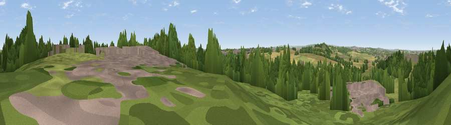

Viewpoint near Swinton
#22819 in England · top 38% of its area beats it · near SwintonThe view, rendered

A 360° render of this exact spot computed from the terrain model, tree cover and land cover — summer colours, afternoon light, calibrated against photographs of famous viewpoints. Real trees, hedges and buildings will differ in detail.
The panorama
Grey silhouette: terrain skyline in each direction (720 bearings, Earth curvature and refraction included). Dashed green: skyline with trees (+15 m) and buildings (+8 m) as obstacles. Blue strip: how far the ground is visible on each bearing.
Where the view opens
Wedge length = distance to the farthest visible ground on that bearing (vegetation-aware). Rings at 10, 25 and 50 km.
What fills the view
37% woodland · 32% grassland · 17% cropland · 13% built-up
Angular shares of the visible panorama (visual magnitude), not map area. Landscape diversity 0.57 (0–1 Shannon).
Key numbers
More beautiful places nearby
The staircase of upgrades: each row has a higher view potential than everything closer. Driving times are estimates from straight-line distance, calibrated against real road routing — check an actual route before setting out.
| Place | Direction | Drive | Score |
|---|---|---|---|
| Viewpoint near Upper Haugh | W · 3 km | ~7 min | 59.5 |
| Hoober Stand | WSW · 3 km | ~7 min | 64.2 |
| Hoyland Lowe | WNW · 8 km | ~15 min | 68.7 |
| Viewpoint near Whitley | WSW · 12 km | ~22 min | 72.1 |
| Viewpoint near Oughtibridge | WSW · 12 km | ~23 min | 72.5 |
| Viewpoint near Wharncliffe Side | WSW · 13 km | ~23 min | 75.2 |
| Viewpoint near Greenfield | W · 44 km | ~64 min | 76.0 |
| Viewpoint near Carrbrook | W · 44 km | ~65 min | 77.1 |
53.48793, -1.34249 · source: screening · position refined by local search. Computed location — check access rights before visiting.